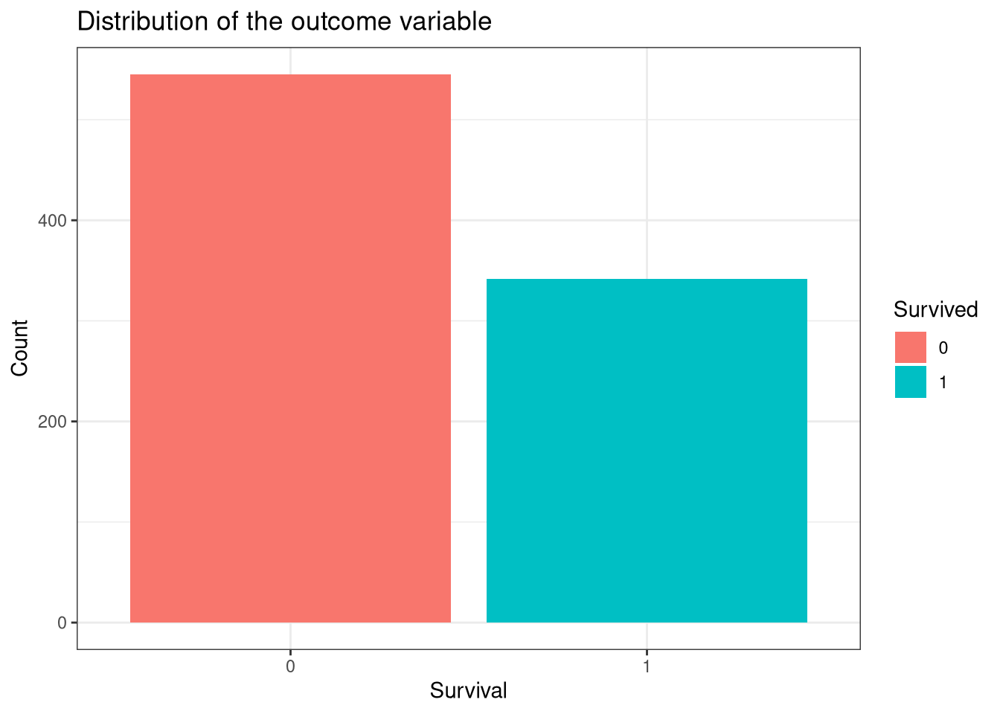
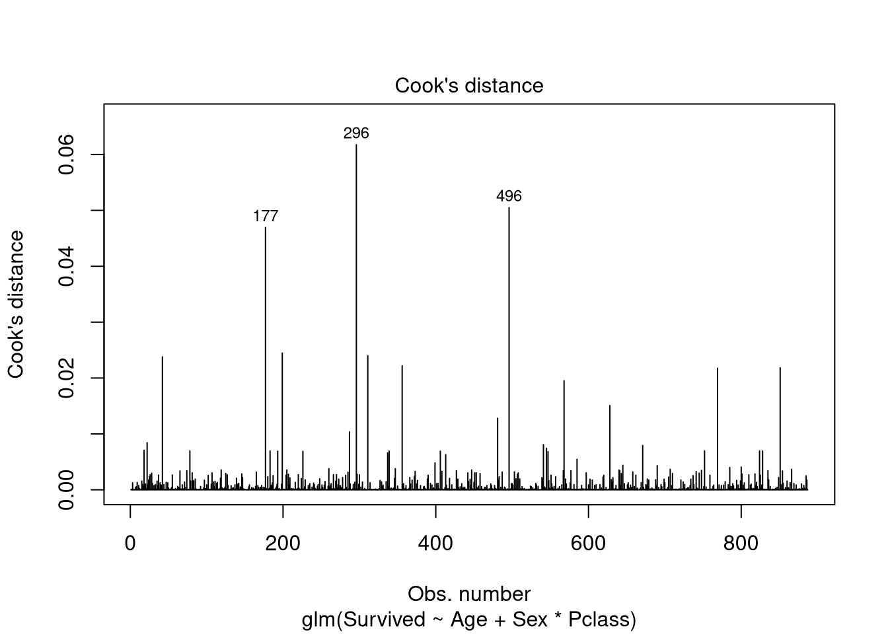
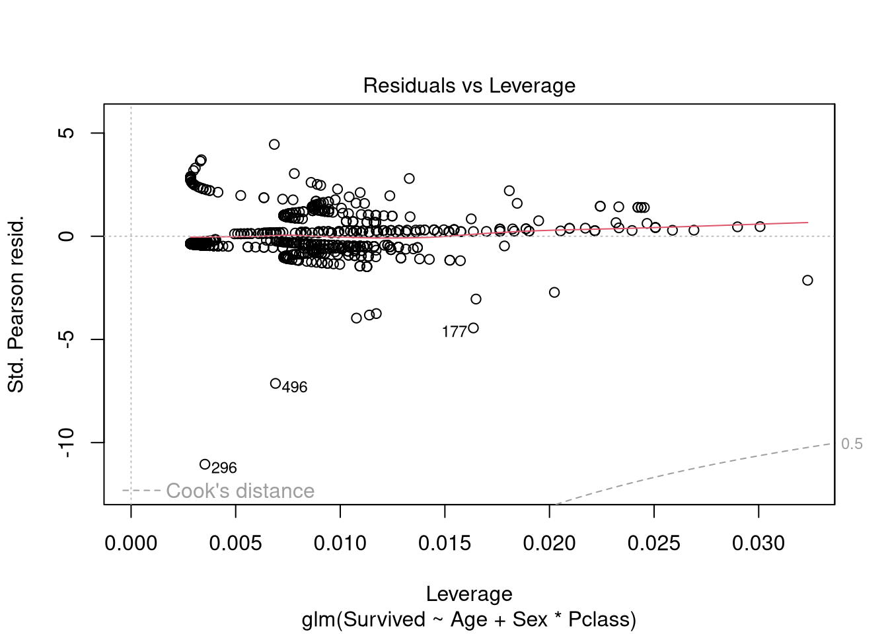
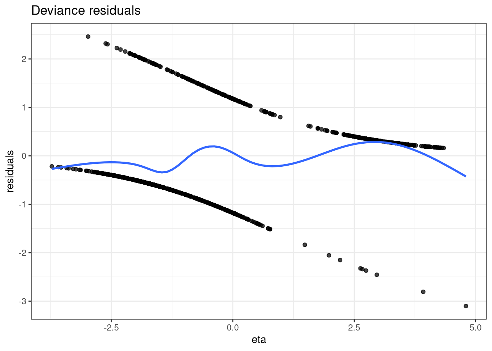
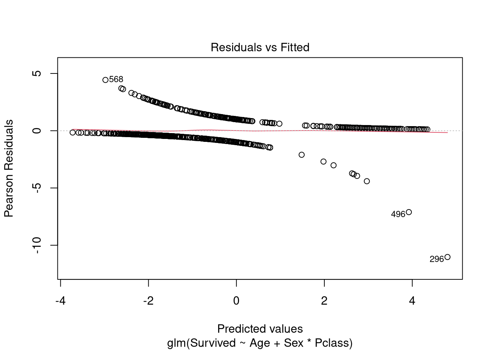

library(dplyr)
library(magrittr)
library(ggplot2)
library(kableExtra)
library(readr)
library(pROC)
library(regclass)
library(caret)Lab 6
Part 1: Repeat from last week
We will use the following packages in this practical:
dplyrfor manipulationmagrittrfor pipingreadrfor reading dataggplotfor plottingkableExtrafor tableslibrary(pROC),library(regclass), andlibrary(caret)for model diagnostics
Loading the data
In this practical, you will perform logistic regression analyses again using glm() and discuss model assumptions and diagnostics.
1. Read in the data from the “titanic.csv” file, which we also used for the previous practical.
# Load in the data
titanic <- read_csv(here::here("data", "titanic.csv")) %>%
mutate(Survived = as.factor(Survived),
Sex = as.factor(Sex),
Pclass = as.factor(Pclass))Rows: 887 Columns: 8
── Column specification ────────────────────────────────────────────────────────
Delimiter: ","
chr (2): Name, Sex
dbl (6): Survived, Pclass, Age, Siblings/Spouses Aboard, Parents/Children Ab...
ℹ Use `spec()` to retrieve the full column specification for this data.
ℹ Specify the column types or set `show_col_types = FALSE` to quiet this message.str(titanic)tibble [887 × 8] (S3: tbl_df/tbl/data.frame)
$ Survived : Factor w/ 2 levels "0","1": 1 2 2 2 1 1 1 1 2 2 ...
$ Pclass : Factor w/ 3 levels "1","2","3": 3 1 3 1 3 3 1 3 3 2 ...
$ Name : chr [1:887] "Mr. Owen Harris Braund" "Mrs. John Bradley (Florence Briggs Thayer) Cumings" "Miss. Laina Heikkinen" "Mrs. Jacques Heath (Lily May Peel) Futrelle" ...
$ Sex : Factor w/ 2 levels "female","male": 2 1 1 1 2 2 2 2 1 1 ...
$ Age : num [1:887] 22 38 26 35 35 27 54 2 27 14 ...
$ Siblings/Spouses Aboard: num [1:887] 1 1 0 1 0 0 0 3 0 1 ...
$ Parents/Children Aboard: num [1:887] 0 0 0 0 0 0 0 1 2 0 ...
$ Fare : num [1:887] 7.25 71.28 7.92 53.1 8.05 ...#I use `readr::read_csv` to import the titanic training dataset, piping the input through `mutate_if` functions to correct the class. *
#As a reminder, the variables are:*
#`Survived` - passenger's survival status where 0 indicates did not survive, 1 indicats survived*
#`Pclass` - 1st, 2nd, and 3rd class tickets*
#`Age` - passenger age in years*
#`Sex` - passenger sex as male or female*Logistic regression
- Fit the following two logistic regression models and save them as
fit1andfit2:
Survived ~ PclassSurvived ~ Age + Pclass*Sex
fit1 <- glm(Survived ~ Pclass,
family = binomial,
data = titanic)
fit2 <- glm(Survived ~ Age + Sex*Pclass,
family = binomial,
data = titanic)Part 2: Model assumptions
Binary dependent variable
The first outcome in a logistic regression is that the outcome should be binary and therefore follow a binomial distribution. This is easy to check: you just need to be sure that the outcome can only take one of two responses. You can plot the responses of the outcome variable to visually check this if you want. In our case, the possible outcomes are:
- Survived (coded 1)
- Did not survive (coded 0)
- Visualise the responses of the outcome variable
Survivedusingggplot().
titanic %>%
ggplot(aes(x = Survived, fill = Survived)) +
geom_bar() +
labs(x = "Survival",
y = "Count",
title = "Distribution of the outcome variable") +
theme_bw()
# You can see that there are indeed only two outcomes for `Survived`, so our outcome follows a binomial distribution.Balanced outcomes
If you are using logistic regression to make predictions/classifications then the accuracy will be affected by imbalance in the outcome classes. Notice that in the plot you just made there are more people who did not survive than who did survive. A possible consequence is reduced accuracy in classification of survivors.
A certain amount of imbalance is expected and can be handled well by the model in most cases. The effects of this imbalance is context-dependent. Some solutions to serious class imbalance are down-sampling or weighting the outcomes to balance the importance placed on the outcomes by the model.
Sufficiently large sample size
Sample size in logistic regression is a complex issue, but some suggest that it is ideal to have 10 cases per candidate predictor in your model. The minimum number of cases to include is \(N = \frac{10*k} {p}\), where \(k\) is the number of predictors and \(p\) is the smallest proportion of negative or positive cases in the population.
- Calculate the minimum number of positive cases needed in the model
fit1.
#First we need to get the proportion of people that survived in our sample, which is 0.38*
titanic %>%
count(Survived) %>%
mutate(prop = n / sum(n))# A tibble: 2 × 3
Survived n prop
<fct> <int> <dbl>
1 0 545 0.614
2 1 342 0.386#Now we can plug this into our formula to get the minimum number of positive cases.
ssize_cal <- function(k, p){
round((10*k)/p)
}
ssize_cal(2, 0.38)[1] 53#We have many more than this in our data so the sample size is large enough.*Predictor matrix is full-rank
You learned about this assumption in the linear regression practicals, but to remind you:
- there need to be more observations than predictors (n > P)
- there should be no multicollinearity among the linear predictors
- Check that there is no multicollinearity in the logistic model.
#VIF(fit1)
VIF(fit2) GVIF Df GVIF^(1/(2*Df))
Age 1.38354 1 1.176240
Sex 10.70246 1 3.271462
Pclass 29.58719 2 2.332255
Sex:Pclass 41.98377 2 2.545484# Like with linear regression we can use the VIF. A VIV > 10 indicates high multicollinearity. Remember that for continuous variables we should inspect the "GVIF" column. For categorical predictors we should check the "GVIF^(1/(2*Df))" column.
# In model 1, the VIF cannot be determined since there is only a single predictor.No influential values or outliers
Influential values are extreme individual data points that can affect the fit of the logistic regression model. They can be visualised using Cook’s distance and the Residuals vs Leverage plot.
- Use the
plot()function to visualise the outliers and influential points offit2.
Hint: you need to specify the correct plot with the which argument. Check the lecture slides or search ??plot if you are unsure.
# There are two relevant plots to check for influential values. The first is Cook's distance plot, which shows the top 3 largest values. Note that not all outliers are influential cases, so we should also inspect the Residuals vs Leverage plot, which shows actual influential cases.
# You can get both of these plots by specifying `which = c(4, 5)` in the `plot()` function.
plot(fit2, which = c(4, 5))

- Are there any influential cases in the Leverage vs Residuals plot? If so, what would you do?
# Leverage is the extent that the model coefficients will change if a particular observation is removed from the dataset. Points that fall outside of the red dashed line (Cook's distance) are influential.*
# There are no values which fall outside of the red dashed lines.*
# If there are influential observations, you can remove them, replace them with a more realistic value, or keep them as they are and make note of it when reporting results.* Differences to linear regressoin
Lastly, it is important to note that the assumptions of a linear regression do not all map to logistic regression. In logistic regression, we do not need:
- constant, finite error variance
- normally distributed errors
However, deviance residuals are useful for determining if the individual points are not fit well by the model.
Hint: you can use some of the code from the lecture for the next few questions.
- Use the
resid()function to get the deviance residuals forfit2.
dr <- resid(fit2, type = "deviance")- Compute the predicted logit values for the model.
eta <- predict(fit2, type = "link")- Plot the deviance residuals.
# The first step is to bind the deviance residuals to the logit values.
dr_data <- data.frame(residuals = dr,
eta = rep(eta, 3))Warning in data.frame(residuals = dr, eta = rep(eta, 3)): row names were found
from a short variable and have been discarded# Now we can plot the data with the residuals on the y-axis, and the logit values on the x-axis.*
ggplot(dr_data, aes(x = eta, y = residuals)) +
geom_point(alpha = 0.35) +
geom_smooth(se = FALSE) +
labs(title = "Deviance residuals") +
theme_bw()
Pearson residuals can also be useful in logistic regression. They measure deviations between the observed and fit1ted values. Pearson residuals are easier to plot than deviance residuals as the plot() function can be used.
- Plot the pearson residuals for the model.
plot(fit2, which = 1)
Part 3: Predicted probabilities
In last week’s practical, you learned how to use the predict() function to calculate predicted probabilites using the models. This week we will create predicted probabilities for the final two models from last week compare the results by using the confusion matrix.
- Use the
predict()function to get model predicted probabilities forfit1andfit2.
# Remember that `type = "response"` returns values on the odds-ratio scale.
prob1 <- predict(fit1, type = "response")
prob2 <- predict(fit2, type = "response")- Create model predicted classifications for survival, for
fit1andfit2.
pred1 <- ifelse(prob1 > 0.5, 1, 0)
pred2 <- ifelse(prob2 > 0.5, 1, 0)Confusion matrix
You can read about the confusion matrix on this Wikipedia page. This section tells you how to get some useful metrics from the confusion matrix to evaluate model performance.
- Create two confusion matrices (one each for each model) using the classifications from the previous question. You can use the
table()function, providing the modeled outcome as thetrueparameter and the classifications as thepredparameter.
# The confusion matrix can be interpreted as follows:
# True positives (bottom right) - correctly predicting people that survived
# True negatives (top left) - correctly predicting people that did not survive
# False positives (bottom left) - predicted people survived, when they did not
# False negatives (top right) - predicting people did not survived, but they did
cm1 <- table(pred = pred1, true = titanic$Survived)
cm2 <- table(pred = pred2, true = titanic$Survived)
cm1 true
pred 0 1
0 465 206
1 80 136cm2 true
pred 0 1
0 489 132
1 56 210# Note: the structure of the confusion matrix depends on the order in which you supply the outcome (i.e., if 0 and 1 were swapped, or if the predicted and true values are switched in rows and columns.
# A third confusion matrix is given in which the order is changed. Always make sure that you read the confusion matrix carefully, so that you notice deviating structures.
table(true = titanic$Survived, pred = pred2) pred
true 0 1
0 489 56
1 132 210- Based on the confusion matrices, which model do you think makes better predictions?
# The second model makes more correct predictions according to the confusion matrix:
# There are 505 correct true negative predictions, and 199 correct true positive predictions from model 2.
# There are 469 correct true negative predictions and 136 true positive predictions from model 1 by comparison.
# The first model makes more incorrect predictions too:*
# There are 143 false negative predictions and 44 false positive predictions from model 2
# There are 206 false negative predictions and 80 false positive predictions from model 1- Calculate the accuracy, sensitivity, and specificity, false positive rate, positive and negative predictive values from the confusion matrix of the model that makes the best predictions.
# First you need to extract the true negative, false negative, true positive, and false positive values from the confusion matrix.
TN <- cm2[1, 1]
FN <- cm2[1, 2]
TP <- cm2[2, 2]
FP <- cm2[2, 1]
# Then you can use these values to calculate the metric asked for.
tibble(
ACCURACY = (TP + TN) / sum(cm2),
SENSITIVITY = TP / (TP + FN),
SPECIFICITY = TN / (TN + FP),
FPR = FP / (TN + FP),
PPV = TP / (TP + FP),
NPV = TN / (TN + FN)
)# A tibble: 1 × 6
ACCURACY SENSITIVITY SPECIFICITY FPR PPV NPV
<dbl> <dbl> <dbl> <dbl> <dbl> <dbl>
1 0.788 0.614 0.897 0.103 0.789 0.787- Explain what the difference metrics mean in substantive terms?
# Model accuracy is 0.79, meaning that 79% are correctly classified.
# Model sensitivity is 0.58, meaning that if the passenger did survive, there is a 58% chance the model will detect this.
# Model specificity is 0.92, meaning that if the passenger did not survive is an 92% chance the model will detect this.
# Model FPR is 0.08, meaning that if a passenger in reality did not survive, there is a 8% chance that the model predicts this passenger as surviving.
# Model PPV is 0.82, meaning that if a passenger is predicted as surviving, there is a 82% chance that this passenger indeed survived.
# Model NPV is 0.78, meaning that if the passenger predicted as not surviving, there is a 78% chance that this passenger indeed did not survive.- What does it mean for a model to have such low specificity, but high sensitivity?
# Sensitivity and specificity are inversely proportioned. This means that as one increases, the other will decrease.
# In our example we have moderate sensitivity, and very high specificity. High specificity means that there are few passengers predicted as not surviving when in reality they did survive. A moderate sensitivity means that relatively more passengers were predicted as surviving when in reality they did not survive. The confusionMatrix() function from the caret package can do a lot of this for us. The function takes three arguments:
data- a vector of predicted classes (in factor form)reference- a vector of true classes (in factor from)positive- a character string indicating the ‘positive’ outcome. If not specified, the confusion matrix assumes that the first specified category is the positive outcome.
You can type ??confusionMatrix into the console to learn more.
confusionMatrix(as.factor(pred2),
reference = titanic$Survived,
positive = "1")Confusion Matrix and Statistics
Reference
Prediction 0 1
0 489 132
1 56 210
Accuracy : 0.788
95% CI : (0.7597, 0.8145)
No Information Rate : 0.6144
P-Value [Acc > NIR] : < 2.2e-16
Kappa : 0.5334
Mcnemar's Test P-Value : 4.502e-08
Sensitivity : 0.6140
Specificity : 0.8972
Pos Pred Value : 0.7895
Neg Pred Value : 0.7874
Prevalence : 0.3856
Detection Rate : 0.2368
Detection Prevalence : 0.2999
Balanced Accuracy : 0.7556
'Positive' Class : 1